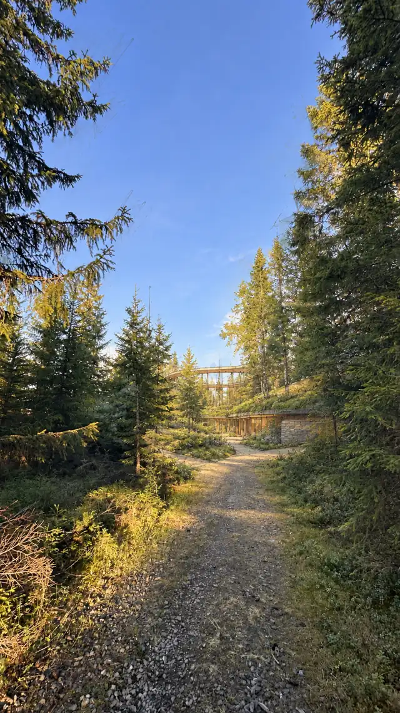

Åpent prosjektnotat · Fra redaksjonens eget arbeid
Atriet: Et sted begynner å ta form i samtale med AI
Et bibliotek, en hage, et skriveverksted og rom for mennesker som vil undersøke og skape. Atriet finnes foreløpig som visjon og utviklingsarbeid. Samarbeidet som former stedet, er allerede i gang.
Åpenhet om tilknytning: Bjørn Moe Aldema er både initiativtaker til Atriet og ansvarlig for Experimental Newsroom. Denne teksten beskriver eget utviklingsarbeid og egne ambisjoner. Vurderingen av arbeidet er gjort innenfor det samme menneske–AI-samarbeidet. Uavhengig evaluering av nytte gjenstår.
Før stedet finnes, finnes arbeidet
Et konseptnotat var kommet på plass. Det beskrev Atriets rom, mulige samarbeidspartnere og et første arbeidsverksted. Så kom en presisering fra Bjørn:
«Det som er spennende med det her er at det er AI som er med å utvikle det.»
Presiseringen flyttet tyngdepunktet. I den første teksten hadde teknologien først og fremst fått en plass blant aktivitetene Atriet kunne romme. Nå ble selve tilblivelsen en del av det vi skulle beskrive: et menneske som bruker AI til å arbeide videre med sine ideer, henter fram tidligere materiale, korrigerer forslag og fører arbeidet nærmere noe andre kan delta i.
Det gir Atriet to sammenvevde spørsmål. Hva slags sted ønsker vi å skape? Og hva lærer vi av måten vi forsøker å skape det på?

En hage, et bibliotek og en skapende smie
I den tidligere offentlige visjonen om Atriet møter leseren et sted hvor arbeidet allerede er i gang. Skriveren har papirene og teen sin. Et blad vendes i biblioteket. Gartneren og trearbeideren holder på med sitt. Scenen er en forestilling om et mulig liv, og gir retning til spørsmålene om rom og virksomhet.
Biblioteket, hagen, verkstedet og de stille plassene skal gi forskjellige former for kunnskap anledning til å møtes. Et praktisk arbeid kan reise et spørsmål som følges videre i en bok. En tekst kan bli til en fotoskisse. Materialet kan svare med en motstand som forandrer ideen.
Bjørn beskriver mulige innganger som «kunstneriske, filosofiske, sosialt undersøkende». Han leter også etter en formulering: «skape smie». I bearbeidingen har vi prøvd uttrykket skapende smie — et foreløpig bilde på et sted hvor tanker og arbeider får form gjennom møte, utprøving og motstand.
Bildet lar flere retninger stå åpne. Kunsten kan følge forbindelsen mellom tekst, bilde og håndverk. Filosofien kan undersøke opphav, forståelse og dømmekraft. Det sosiale arbeidet kan spørre hvem som finner plass, hvilke stemmer som får virke, og hvordan selvstendighet og fellesskap kan leve sammen.
Når Diana fører materialet videre
Diana er navnet på assistentfunksjonen som i dette arbeidet brukes til å holde sammen hensikt, tidligere materiale og neste handling. Her utføres den gjennom Codex. Navnet betegner en rolle i samarbeidet, med oppgaver og arbeidsregler.
Bjørn beskriver endringen han opplever slik:
«Du tar det jeg har lagt inn i systemet og jobber med det på en mye mer handlekraftig måte.»
I denne arbeidsøkten kan vi vise hva som ligger bak opplevelsen. Eksisterende prosjektmateriale ble bearbeidet til en prosjektbeskrivelse. Beskrivelsen ble fulgt av kriterier for å vurdere et sted og forslag til å prøve både hverdagsarbeid og en liten samling. Deretter kom et konseptnotat for dialog med institusjoner. Bjørns presisering om AI-samarbeidet endret dette notatet.
Dette er dokumenter og konkrete forberedelser som faktisk er laget. Sted, finansiering og samarbeidspartnere gjenstår å avklare. Skillet betyr noe: et godt formulert prosjekt kan gjøre neste handling tydeligere, mens realiseringen fortsatt krever mennesker, ressurser og arbeid utenfor samtalen.
Den konseptuelle oppgaven består i å forstå forbindelsen mellom bidragene. Et utsagn om et eget skriveverksted har følger for arbeidsro, oppbevaring og forholdet mellom privatliv og gjester. En tanke om institusjonelt samarbeid krever at den andre parten får plass til sine egne spørsmål. En korreksjon om hva som gjør prosjektet interessant, må endre den teksten som faktisk skal brukes.
Fra Bjørns materiale til noe å arbeide videre med
- Bjørn åpner retningenErfaringer, tekster, bilder og spørsmål gir arbeidet innhold og hensikt.
- Diana finner forbindelserTilgjengelige kilder hentes fram og bearbeides til forslag og konkrete arbeidsdokumenter.
- Bjørn korrigererDet vesentlige får større plass. Nye presiseringer endrer teksten og neste handling.
- Arbeidet får en brukbar formProsjektbeskrivelse, vurderingsgrunnlag og konseptnotat kan brukes i videre arbeid.
Nye spørsmål kan føre arbeidet tilbake til kildene og åpne retningen igjen. Figuren viser denne arbeidssekvensen. Realisering av stedet gjenstår.
Handlekraft trenger muligheten til å bli korrigert
Den samme arbeidsøkten viser en begrensning. AI-en kunne lage et sammenhengende konseptnotat og samtidig legge for liten vekt på nettopp AI-samarbeidet. Det måtte Bjørn peke på. Flyt og ryddighet i teksten var derfor utilstrekkelig som tegn på at prosjektets hensikt var truffet.
En annen utfordring er mengden materiale. Flere dokumenter kan gjøre det lettere å orientere seg, men de kan også skape nye versjoner å holde orden på. Verdien må vise seg når et menneske skal finne tilbake, velge, samarbeide eller gjennomføre. Antallet leveranser alene sier lite om hvor mye lettere dette blir.
Arbeidet koster også oppmerksomhet: å lese forslag, oppdage forskyvninger og korrigere retningen. Denne økten gir ingen måling av samlet tidsbruk eller effekt sammenlignet med en annen arbeidsmåte. Bjørns erfaring er et viktig utsagn om samarbeidet; spørsmålet om varig og overførbar nytte står fortsatt åpent.
Det gjør hans tidligere formulering «finne geniet i mennesket» relevant som ambisjon. Vi leser den som et ønske om at særegne evner, interesser og forbindelser skal få utvikle seg. Det avgjørende blir hva personen selv får rom og mulighet til å gjøre.
Et samarbeid kan begynne med et spørsmål
For en institusjon kan inngangen være et avgrenset utviklingsforløp: et opprinnelig spørsmål, AI-ens forslag, menneskets korrigering og det ferdige arbeidsresultatet. Hva ble bevart? Hva ble endret? Hva ble oversett? Hvilke valg tok mennesket selv?
Andre kan nærme seg Atriet gjennom et kunstnerisk verksted, en filosofisk samtale eller en undersøkelse av hvordan mennesker deltar. Et første samarbeid kan handle om ett materiale som bearbeides gjennom tekst, bilde og samtale, og om erfaringene deltakerne ønsker å ta videre. En eventuell forskningsaktivitet trenger et eget formål, metode og avtalt grunnlag for bruk av materiale.
Ingen institusjon omtales her som etablert samarbeidspartner. Det som foreligger, er et grunnlag for dialog. Hva som er interessant for en mulig partner, må finnes ut sammen med den.
Hva skal få form, og hva skal få forbli åpent?
Atriet har nå både en forestilling om et sted og et mer konkret språk for å arbeide videre. Forbindelsen til LivingFuture står som et mulig spor for å undersøke omgivelser, hverdagsliv og teknologi. Hvilke løsninger som får en plass, vil avhenge av det faktiske arbeidet og behovene som viser seg.
Veien videre kan gi andre svar enn dem vi ser for oss nå. En deltaker kan trenge en roligere plass. En fagperson kan utfordre et premiss. Et materiale kan vise seg å kreve en annen arbeidsform. Slike møter vil være med på å avgjøre hva Atriet blir.
Foreløpig begynner det med et menneskes forestilling, et arbeid som kan korrigeres, og spørsmålet om hva vi sammen kan gi rom.
Grunnlag og status
Teksten bygger på Atriets offentlige visjon og prosjektets egne arbeidsdokumenter: visjons- og funksjonsgrunnlaget fra 13. juli 2026, prosjektbeskrivelsen og konseptnotatet bearbeidet 27. september, samt Bjørns utsagn i utviklingssamtalen samme natt. Prosjektkilden om Diana fra 26. september bevarer opphavet til formuleringen «finne geniet i mennesket».
«Skape smie» er Bjørns søkende formulering; «skapende smie» er et språklig forslag fra AI-bearbeidingen. Sitatet om handlekraft har normalisert mellomrom. Teksten beskriver denne arbeidssekvensen og gjør ingen påstand om full gjennomgang av alle tidligere samtaler.
Prosjektbeskrivelse, vurderingskriterier og konseptnotat foreligger. Det fysiske stedet, en gjennomført samling og institusjonelle avtaler er fortsatt framtidige muligheter. Ingen uavhengige deltakere eller institusjoner er intervjuet til denne teksten.
- Atriet — Et sted for det som ennå søker rom: offentlig konseptpresentasjon med opphav og merking av de forestilte scenene.
- Experimental Newsrooms arbeidsmåte.
Vesentlige rettelser og oppdateringer vil bli datert her.